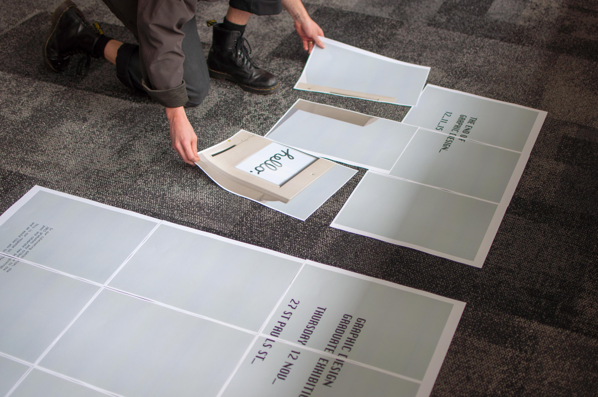

The brand & the story
Brief
The process of developing a brand identity for any exhibition is no easy task. This brief then grows when it must express the importance of 2015 being the final graphic design year, ultimately adapting how design is learnt and expressed from now onwards.
The challenge was to create an exhibition that is not only better than the previous year, but that is a more considered and inspired graphic design showcase than ever before.
The Name
